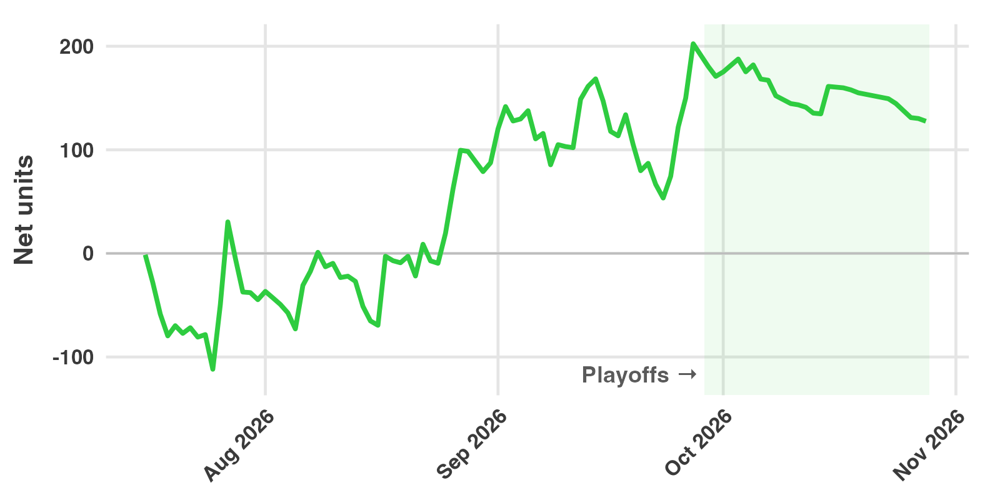

2026 MLB Recap: +128 Units at 2.4% ROI
Summary
Slam Dunk Bets launched baseball on July 16, 2026. From that day through the last game of the World Series on October 28, we recommended 5,293 plays, logged as 10,508 wagers, across six MLB markets. They returned +128 net units on 5,326 units staked, a return on investment (ROI) of 2.4%.
The two markets we launched with carried the season. Home runs returned +131 units (4.8%) and first-inning plays (NRFI and YRFI) returned +19 units (2.9%), a combined +149 units at 4.4%. The four batter markets we added in September, stolen bases, RBI, runs scored and total bases, lost 22 units between them.
These are thinner margins than our basketball picks, which returned 16.3% in the 2025-26 NBA season and 12.5% so far in the 2026 WNBA season, and this was a partial first season. We publish it the same way.

Results by part of the season
| Wagers | Plays | Wins | Units staked | Net units | ROI | |
|---|---|---|---|---|---|---|
| Regular season | 9,696 | 4,855 | 2,343 | 4,902 | +202 | 4.1% |
| Postseason | 812 | 438 | 179 | 423 | -75 | -17.7% |
| Total | 10,508 | 5,293 | 2,522 | 5,326 | +128 | 2.4% |
The regular season ended on September 27 and the postseason began on September 29. The postseason lost 75 units. The home run and first-inning markets accounted for 12 of that, on 337 wagers (-7.7%); the September markets lost the other 63.
24.0% of wagers won, but the rate varies a lot by market. On home run plays alone, 11.4% of wagers won. The median home run price we bet was +750, which a sportsbook prices as about a 12% chance.
Results by market
| Market | Wagers | Plays | Wins | Units staked | Net units | ROI |
|---|---|---|---|---|---|---|
| 1+ home run | 5,105 | 2,661 | 588 | 2,692 | +26 | 1.0% |
| 2+ home runs | 98 | 57 | 6 | 41 | +107 | 259.6% |
| 3+ home runs | 4 | 2 | 0 | 2 | -2 | -100.0% |
| YRFI | 1,044 | 428 | 490 | 497 | +20 | 4.0% |
| NRFI | 307 | 144 | 155 | 139 | -1 | -1.0% |
| Runs scored, 1+ | 713 | 377 | 279 | 396 | +25 | 6.3% |
| RBI, 1+ | 659 | 357 | 193 | 347 | +9 | 2.7% |
| Stolen bases, 1+ | 474 | 253 | 44 | 245 | -27 | -11.1% |
| Total bases, 2+ | 2,104 | 1,014 | 767 | 967 | -29 | -3.0% |
The 1+ home run market is where most of the volume was, with 2,692 units staked, and it finished one point above even. We started the season alerting plays with a 1-point edge and raised the threshold twice, to 2 points, after our own tracking showed that the thinnest edges were about a third of the volume and returned roughly nothing.
The 2+ home run market made +107 units from 57 plays. Four wins at prices from +1520 to +9000 returned 143 units, and the other 53 plays lost 36. That is one good stretch on very long prices, and it should not be expected to continue.
First-inning plays were steadier, as near-even prices are: no long losing streaks and no large single wins. Most of the plays were YRFI, which suggests books leaned toward pricing NRFI a little high in 2026, but 572 plays is not enough to be sure.
Of the September markets, runs scored (+25, 6.3%) and RBI (+9) finished positive. Stolen bases lost 27 units at -11.1%, and total bases, the largest of the four by volume, lost 29 (-3.0%). Each of the four is one month of the regular season plus the postseason, and none is a large enough sample to judge.
What the markets mean:
- 1+, 2+ and 3+ home runs: the batter hits at least that many home runs in the game.
- NRFI and YRFI: no run, or at least one run, is scored in the first inning by either team.
- Runs scored, RBI, stolen bases: the batter is credited with at least one in the game.
- Total bases, 2+: the batter’s hits add up to at least two bases, for example a double or two singles.
Results by month
| Month | Units staked | Net units | ROI |
|---|---|---|---|
| July 2026 | 769 | -45 | -5.8% |
| August 2026 | 1,033 | +132 | 12.8% |
| September 2026 | 3,201 | +84 | 2.6% |
| October 2026 | 323 | -43 | -13.4% |
July was the launch month, alerted at the original 1-point threshold, and it lost 45 units. August, with the higher threshold, was the best month at 12.8%. September had by far the most volume because the four new markets started; the home run and first-inning markets alone returned +57 units (3.9%) in September and +5 in October.
The season’s largest decline was 115 units, from +169 on September 14 to +53 on September 23. The total reached a new high on September 27.
We placed wagers on 97 days, and 37 of those days (38.1%) finished positive. That is a lower share of winning days than in basketball, which is what long prices produce: most days lose a little and a few days win a lot. The best day was July 27, at +80 units, and the worst was the next day, July 28, at -35 units.
Players
These totals combine every batter market for each player; the first-inning markets are not included.
| Player | Wagers | Wins | Units staked | Net units | ROI |
|---|---|---|---|---|---|
| Joc Pederson | 16 | 7 | 10 | +74 | 718.1% |
| Drew Gilbert | 59 | 21 | 23 | +55 | 234.1% |
| Shohei Ohtani | 91 | 18 | 72 | +49 | 67.9% |
| Griffin Conine | 67 | 39 | 35 | +42 | 121.8% |
| George Lombard Jr. | 30 | 21 | 14 | +39 | 283.2% |
The three least profitable players were Mike Trout (-50 units on 144 wagers, 15 wins), Rafael Flores Jr. (-25 units on 51 wagers, 1 win) and Mickey Gasper (-23 units on 49 wagers, 1 win). In total we placed wagers on 448 players.
Trout was the player we bet most often. His home run price was regularly above our projection, and the plays won 11 times in 127 home run wagers. Pederson’s total comes almost entirely from one game, on July 27, when he hit two home runs at a 2+ price of +9000.
Largest wins
| Date | Team | Market | Selection | Price | Units staked | Net units |
|---|---|---|---|---|---|---|
| Jul 27, 2026 | Rangers | 2+ home runs | Joc Pederson | +9000 | 0.6 | +51.2 |
| Aug 17, 2026 | Dodgers | 2+ home runs | Shohei Ohtani | +1520 | 3.4 | +50.0 |
| Aug 1, 2026 | Cubs | 1+ home run | Nico Hoerner | +4500 | 0.9 | +29.9 |
| Aug 6, 2026 | Braves | 2+ home runs | Ronald Acuña Jr. | +7000 | 0.5 | +28.5 |
| Sep 1, 2026 | Athletics | 1+ home run | Jeff McNeil | +2200 | 1.5 | +28.3 |
The ten largest wins together returned +306 units, more than twice the season’s net. Without them, the season would have lost about 178 units. That is the shape of a longshot market, and it is more concentrated than our basketball results, where the ten largest wins were 22% of the NBA net and 71% of the WNBA net. The largest loss on any single play was 9.9 units, a 1+ home run play at +220.
How accurate were the projections?
For each of the 5,293 plays, we compared our projected probability with the sportsbook’s price at the time of the first alert.
| Expected wins | |
|---|---|
| Our projections | 1,385 |
| Sportsbook prices | 1,208 |
| Actual wins | 1,192 |
The plays won 16 fewer times than the sportsbook prices implied, and 193 fewer than our projections. The season was still profitable because of which plays won, not how many: the wins came disproportionately at the longest prices, where a single win pays for many losses.
Our projections were too high by about 3.6% of plays, a larger overestimate than in our basketball markets. Some of that is expected, since we only bet when our number is higher than the book’s, and some of it is the reason we raised the edge threshold during the season. By market, the home run plays were projected to win 404 times, priced by the books at 327, and won 317; the first-inning plays were projected at 295, priced at 278, and won 281.
How we counted
- Wagers and plays. A play is one recommendation: a batter or a game, in one market, on one day. When a price improves after the first alert, we recommend adding to the play, and each addition is logged as a separate wager. The same play at a different sportsbook is also a separate wager.
- Units. Unit sizes are half-Kelly, standardized so that the average recommended wager is about one unit. Net units are winnings minus losses. ROI is net units divided by units staked.
- Voided wagers. 898 wagers were voided, almost all because the batter did not play or was lifted before a plate appearance. They are excluded from every figure above.
- Completeness. The figures include every other wager we alerted from July 16 through October 28, at the sportsbook price posted when we alerted it. Kalshi, Novig and ProphetX prices appear in our alerts for reference but are not counted as plays.
- Sportsbooks. Fanatics accounted for 30% of units staked, at a 7.0% ROI. BetRivers accounted for 22%, at 2.5%, and DraftKings for 18%, at 1.2%. FanDuel (10% of units) returned 5.0% and BetMGM (7%) returned 9.6%. Hard Rock, theScore and Caesars, 13% of units between them, all lost money.
These are tracked results, not a guarantee. Your results depend on which sportsbooks you can use, how quickly you place a wager after an alert, and any betting limits on your account. Past results do not predict future results.
The live record for every market is in the Slam Dunk Dashboard, results for every season are in the FAQ, and the market-by-market record is on our MLB picks pages. How the models work is covered in our four-part series, starting with Part 1: Pitch Data. To get the alerts as they post, subscribe.